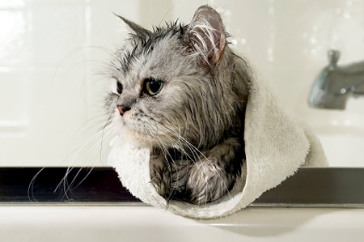

Application cached. You can work offline now
Cat Bathing 101
This image originates from a non controlled page so, if you reload, it will be always synced with the version in the server.

Whether your cat had a run-in with a skunk or you’re simply trying to curb the level of dander in your house, a scrub down may be just what your cat requires. See our step-by-step instructions for a safe and low-stress bathing experience.
Have a battle plan sketched out so that you can get your cat in and out of the bath as quickly as possible.
1. Anticipate how your cat might react to a bath. We understand that many, if not most, cats will avoid a dip in the water at nearly any cost. If you’re worried about your cat resisting violently, it’s always a good idea to consult with your veterinarian about how to approach this stressful situation. Your vet should be able to offer a few behavioral recommendations and/or even medications to help put your cat at ease.
2. Do advance grooming work. If possible, trim your cat’s nails before a bath to help reduce the number of scratches your forearms endure. Give the cat a good brushing before bath time to remove the loose and matted fur.
3. Pick your location. We recommend using a bathtub or sink equipped with a handheld spray nozzle to assist in the washing and rinsing of your cat.
4. Line up the proper tools and equipment. By the bathtub or sink have your supplies ready:
- Shampoo that is appropriate for your cat’s age and coat. Check online or at your local pet retailer for a formula that suits your grooming needs.
- Any medicines that you are applying to the cat.
- A washcloth for cleaning your cat’s face and head.
- A soft towel to dry your cat .
- Clothing that protects your arms from scratches/biting. We really can’t emphasize this enough!
5. Enlist an assistant cat wrangler. Sometimes two hands isn’t enough when dealing with four paws so have a friend with you to help soothe or restrain your cat during the washing or rinsing.
The Bath
Once you’ve gathered your materials and located a willing helper, it’s time to bathe this kitty.
1. Prepare the water. Before picking up the cat, make sure you have the lukewarm water running. If you don’t have access to a spray nozzle, fill your sink or tub with 3 to 5 inches of lukewarm water. Test the water with your hand to ensure that it’s not too hot or cold.
2. Put your cat in the tub. Gently but surely wet his or her fur using either with spray nozzle or your washcloth. Be careful to avoid splashing water in your cat’s eyes, ears, or nose.
3. Massage the shampoo into your cat’s fur. Follow the directions listed on the label for application of the soap or medicine. Once again, carefully avoid your cat’s eyes, ears, and nose. Use your washcloth to gently wash your cat’s face and head.
4. Rinse the shampoo out of your kitty’s fur. This is the step in which a spray nozzle brings a clear advantage as you can easily move it around the cat’s body. If you’re not using a spray nozzle, use your wet washcloth to rinse the fur, refilling the sink or tub with lukewarm water until you’ve washed all of the shampoo from your cat’s coat.
5. Check for any soapy spots you may have missed. Shampoo left in the fur may cause skin irritation, or your cat may get from licking the shampoo off. Do a careful check under your cat’s chin, it’s feet, under its abdomen, etc.
6. Dry your cat. Use your soft towel to dry his or her fur. If your cat will tolerate it, a hairdryer on a low-heat setting can speed the process.
And then consider giving your pet -- and yourself -- a treat. You both deserve it.